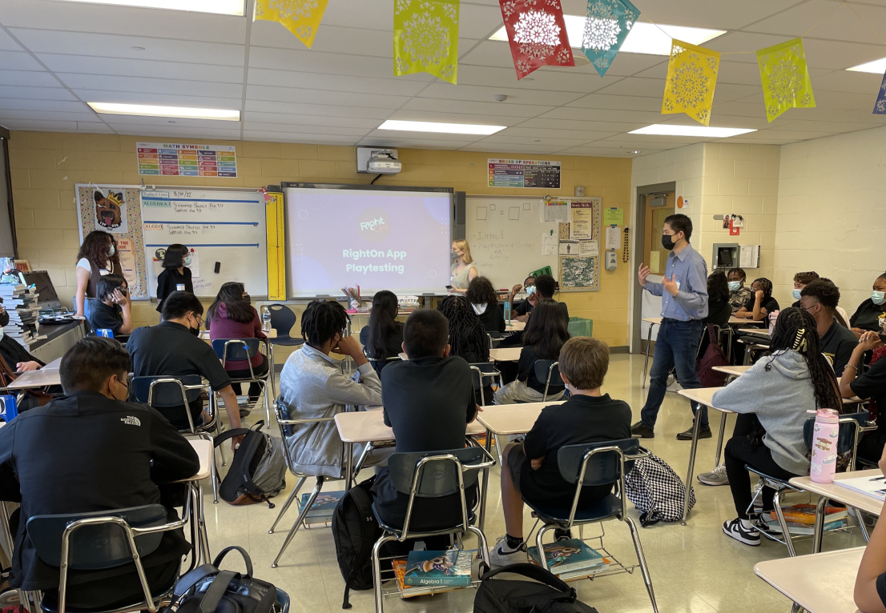

RIGHTON!
Utilizing mixed methods research to improve the design and
interaction of a game-based learning platform that builds
self-efficacy for middle and high school math students.
PROJECT INFO
- Project for Co-op Internship
- Role: UX Designer
- July 2022 - September 2022
ROLES & RESPONSIBILITIES
- Leading Usability Testing Sessions
- Analyzing Key Trends from Data
- Designing Solutions for Identified Usability Issues
- Ideating New Microinteractions
TOOLS USED
- Figma
- Figma Mirror
- Google Forms
overview
RightOn! is a math classroom app that engages students in thinking about and discussing not only correct answers, but incorrect answers as well. This allows students to embrace mistakes and misconceptions, increasing self-confidence and deepening conceptual understanding.the problem
When joining the RightOn team, it was clear that their
mobile app was in its beginning stages, with only functionality
in mind, ignoring the users' experience. It lacked cohesiveness
and the visual design was not engaging enough for the intended
audience - middle and high school math students.
goal
Enhance the RightOn student experience by increasing engagement
& ease of use.
challenges
Time was the biggest challenge during this project. I was typically
assigned many projects to work on simultaneously including working
on the teacher facing app, the company website, and outreach to
educators.
It was also difficult not having as much time as we hoped to do testing in schools since we were working during students' summer break. As a result, we needed to come up with alternative methods to gather data from students.
It was also difficult not having as much time as we hoped to do testing in schools since we were working during students' summer break. As a result, we needed to come up with alternative methods to gather data from students.
the process
- Conducting Individual Lab Testing with 9 Students -
01 - Beginning User Interviews
We connected the pre-existing high-fidelity screens into an interactive prototype to test with, and wrote questions about the current game's usability We started by asking questions about every major step of the pre-existing
process, and listened for any other pain points the students had
We started by asking questions about every major step of the pre-existing
process, and listened for any other pain points the students had
Findings:
- Question/answer layout was confusing
- General confusion because most ignored the instructions
- Some students gave responses relating to the question material vs the experience of playing
02 - Getting Advice
After our first couple of student interviews, our team wanted to improve our analysis questions, so we sought out the expertise of a cognitive science/ux researcher to help us gather our data in the most effective way.Results:
- Learned to utilize open ended questions, a visual likert scale (google form), & the differences in testing attitudinal vs behavioral research
- We continued to meet with our research mentor, a UX designer, and 2 teachers who helped us improve our user testing skills and focus the direction of the project
03 - Iterative Testing w/ More Narrow Focus
After changing our questions a bit, we continued to receive more thoughtful responses from students.With continued interviews, we used our findings to keep iterating new questions and interactive prototypes.
Findings:
- They felt bored
- Yearned for more competition
- They all enjoyed the monsters & want more of them
- Yearned for more competition
- They all enjoyed the monsters & want more of them
Question/answer layout is confusing
- They don't know to swipe, get stuck
- But, think the design is unique & functional
General confusion because most ignored the instructions
- Conducting Classroom Usability Testing -
01 - Create New Prototype to Test Solutions from Findings
With an in-person classroom setting we wanted to not only confirm some of the discovered pain points from previous interviews, but also test possible solutions for them.
Our Main Goals
1. Test new solution to question/answer card swipe 2. See how well they understand the instructions
5. Gain additional feedback/suggestions
02 - Perform the Usability Test
Our Setup:
- 2 different classes
- 45 minutes per class
- 35 students per class
- 6 devices
- 3 UX Interns
- 1 smartboard
- Students' personal devices
To watch the students' genuine reactions and thought-processes,
we did small group testings where each individual played through
the prototype. They then scanned the presented QR code that led them
to our google form questionnaire, and us interviewers could move to
the next group.
Finally, we had a group discussion at the end to talk about any other feedback they wanted to share apart from the google form. 
03 - Analyze Data, Identify Trends
We asked 12 survey questions to 41 students
65% of students said the instructions were not very clear
“Make me pay attention in some way, I skipped past it too
easily”
“My favorite thing about the RightOn app is the little monsters”
71% of students said they would prefer to see both an
individual and top 5 leaderboard
Patterns we noticed when watching the students in the first class interact with the prototype:
- Confusion about what they were supposed to be doing
- Still some slight confusion about the question/answer swipe layout
- The new leaderboard got them excited and increased motivation
- Gaps in the flow where the users have to wait caused disengagement
Surprising Results
Conducted A/B testing with 1: new layout idea and 2: the original layoutEven though we thought the new design was more intuitive, there were a mix of things that proved our opinion wrong:
1. In the case of long word problems, students preferred the 2
card layout
2. Students enjoyed how it challenged them to think of their own answer before seeing the options
3. It turned out to be not as big of an issue as we thought
- When first detecting the card swipe motion as a point of confusion, we had mainly conducted testing via zoom. Because our subjects used the figma prototype with a mousepad, it didn't perfectly simulate how it would be typically used on a mobile device.
2. Students enjoyed how it challenged them to think of their own answer before seeing the options
3. It turned out to be not as big of an issue as we thought
- When first detecting the card swipe motion as a point of confusion, we had mainly conducted testing via zoom. Because our subjects used the figma prototype with a mousepad, it didn't perfectly simulate how it would be typically used on a mobile device.
solutions
- How Do These Changes Improve the Overall User Experience? -
Question/Answer Layout
Since there was still slight confusion, we tested adding small arrows to the cards to signify that there is something else there to see.Because swiping is a natural motion for mobile users, the students got the hang of it super easily, and the arrows helped to nudge those still unsure.
New “How to Play” Tutorial
Students can now connect the words with images to anticipate what's coming next
before
after
Leaderboard
In the original leaderboard flow, those who didn't land in the top 5, received no personal feedback and ended the game feeling negatively about themselves.Following RightOn's mission to promote a positive culture of error, we found a solution that would:
- Avoid causing stress
- Encourage those with lower scores
- Give the feeling of fairness and satisfaction
First, students see their individual score, and then they can chose to advance to the leaderboard if they want to
The monster's sign lets the student know if they made it in the top 5, but gives them positive feedback even if they didn't
the final result
Walkthrough of the final game flow created with Figma prototype. Enjoy!
solo project
- Powerup Feature - Designed for Post MVP Launch -
This additional feature to the game would occur after the students have answered their question, but are waiting for the rest of their class to answerSolutions
- Fills the time gap to increase engagement
- Motivates students to get the answer correct
- Provides students a quick fun brain break